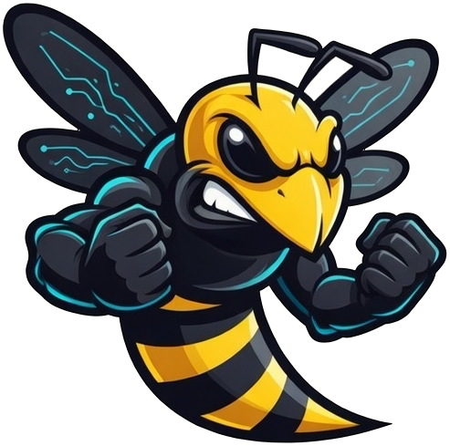

LLM Providers
Any Model,
Any Model,
Zero Lock-in
Switch providers at runtime. Task-based routing picks the right model per job. Graceful recovery on context overflow.
Self-hosted cognitive runtime that plans, executes, and improves itself. Real tasks with real tools, layered memory, and 41 jobs running 24/7. One-line install.

Most AI tools answer questions. WASP executes tasks. Describe an objective once: the agent breaks it into steps, runs each one with real tools, monitors outcomes, and reports back. You manage nothing in between.
Goal planning, real tool execution, layered persistent memory, self-improvement, and 41 background scheduler jobs on infrastructure you control.
Set a goal. WASP turns it into a DAG, executes each node with real tools, detects failures, and replans automatically.
GoalOrchestratorRemembers across sessions, model switches, and reboots. 28 PostgreSQL tables + Redis cache covering episodic, semantic, procedural, knowledge graph, behavioral, temporal, vector, and more.
MemoryManagerBrowse, run code, send email, scrape, screenshot. Real tool execution, not text simulation. SSRF-protected. Custom Python skills at runtime.
SkillRegistryComplex tasks spawn named sub-agents with isolated memory and capability sandboxes. MetaSupervisor decomposes goals into coordinated teams.
AgentOrchestratorThe agent reads, patches, and rebuilds its own source at runtime. Dry-run previews the diff + AST verdict before any write.
self_improve · dry_runDuring idle hours (1–7 am), WASP consolidates memory, enriches the knowledge graph, and reflects on recent events. Sharper when you return.
DreamJobNo vendor lock-in. Routes tasks across Anthropic, OpenAI, Google, xAI, and local Ollama, recovering automatically on context overflow.
ModelManagerMemory consolidation, perception, autonomous goals, response validation, capability evolution. Running 24/7 without supervision.
SchedulerCorrect it once. WASP detects the correction, extracts a persistent rule via LLM, and injects it into every future prompt automatically.
BehavioralLearnerSix containers, single responsibility each. One line to install:
sudo bash -c "$(curl -fsSL https://agentwasp.com/install.sh)"
The brain. Goal orchestration, 41 jobs, dashboard (151 endpoints) on port 8080.
FastAPI · Python 3.12Event bus via Redis Streams + state cache + working memory.
Redis 7Long-term memory across 28 tables: episodic, semantic, KG, behavioral, audit, timeline.
PostgreSQL 16Telegram bridge. Fail-closed: refuses to start without a user allowlist.
python-telegram-botPrivileged sidecar with strict Docker-API allowlist. The only container with socket access.
Endpoint allowlistOptional local LLM runtime. No models downloaded by default; pull when needed.
Ollama · local-firstAcross 28 PostgreSQL tables and Redis. Persists across sessions, reboots, and model switches. Full reference in docs →
Full conversation history with timestamps, chat IDs, model metadata.
Distilled facts and preferences extracted from conversations.
Multi-step solutions abstracted as named procedures with triggers.
Entity + relation extraction per message. Postgres + Redis cache.
Rules learned from user corrections. Injected into every prompt.
World timeline of entity states + trend detection + change alerts.
Dense embeddings in Postgres JSONB. Cosine similarity, no external DB.
Live skill success rates, known failures, per-domain confidence.
Visual, working, goal-scoped, dream log, recovery, reflection.
Real tool execution, not text simulation. Policy-gated across 5 tiers, audit-logged, composable. Custom Python skills at runtime.
Memory consolidation, autonomous goals, perception, capability evolution. Running 24/7 with state-persistent catch-up on restart.
+ 29 more (memory pruning, vector indexing, audit retention, world model updates, etc.). See all 41 →
Five systems that make WASP permanently better with every interaction. No human supervision required.
When a capability is missing, WASP generates new skill code via LLM, validates it through an AST + security sandbox, and registers it live. No reboot.
sandbox-validated · max 5/dayScans episodic memory for repeated patterns and proactively suggests automations via Telegram. 48h dedup to avoid noise.
2/day max · pattern-drivenPost-mortem on every goal: what worked, what failed, what to do differently. Top reflections inject into future prompts.
per goal · context-injectedDeterministic grounding/drift/completeness check on every response. Auto-recovery on failure. Successful patterns cached for reuse.
deterministic · auto-recoveryRedis-backed rate limits across goals, agents, tasks, and LLM calls. Fail-open on Redis loss. Prevents runaway autonomy.
fail-open · per-user TTLSwitch providers at runtime. Task-based routing picks the right model per job. Graceful recovery on context overflow.
Path traversal, SSRF, prompt injection, CSRF. All hardened with build-gated regression tests. 622 tests passing.
Argon2 hashing, Redis sessions (24h TTL), 5-attempt lockout, audit-logged.
Session-bound single-use tokens. X-CSRF-Token validation on every mutating request.
realpath containment in self_improve. Symlink traversal blocked.
Centralized guard with DNS rebinding protection + manual redirect re-validation. Applied to all HTTP-touching skills.
Bridge refuses to start without a user allowlist. No public-bot mode.
Per-address or @domain.com. Defense vs prompt-injection exfiltration.
AST validation of all generated skill code. Blocks subprocess, eval, ctypes, pickle, importlib.
API keys auto-redacted in audit logs (OpenAI, Anthropic, Google, Stripe, Slack, HuggingFace, Bearer).
5 levels (SAFE → PRIVILEGED). Sandbox allowlists per agent. Every execution audit-logged.
App containers run as UID 1000 (non-root). Docker socket only via broker allowlist proxy.
Running a self-hosted autonomous AI agent. What you need to know.
sudo bash -c "$(curl -fsSL https://agentwasp.com/install.sh)". The installer detects your distro (Debian, Ubuntu, RHEL, AlmaLinux, Rocky, Fedora, Arch, openSUSE, Alpine, macOS), installs Docker if missing, generates secure secrets, walks you through onboarding, and starts the stack. Windows via WSL2 also supported.One line. One Docker-capable host. Full cognitive autonomy running in minutes.
You are not just using an AI. You are operating one.